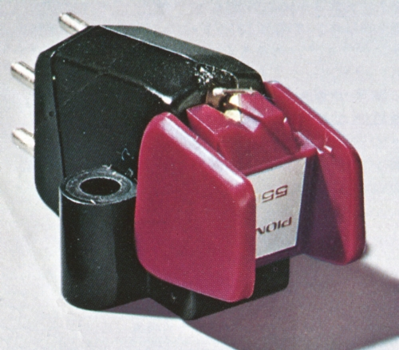
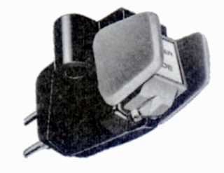
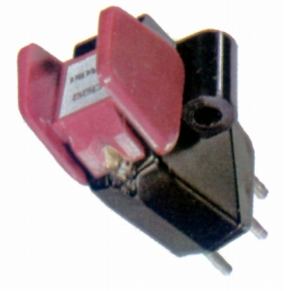

PC-550E



■価格 14,000円
■発電方式 MM型
■出力電圧 2.5mV
5cm/sec
■針圧 0.75〜1.5g（最適
1.2g）
■再生周波数帯域 10-30,000Hz±3dB
■チャンネルセパレーション 30dB/1kHz
20dB/100-15,000Hz
■チャンネルバランス 0.75dB以内(1kHz)
■コンプライアンス 20×10-6cm/dyne（スタチック）/15×10-6cm/dyne（水平
ダイナミック)
■負荷抵抗 30〜100kΩ
■直流抵抗 350Ω
■インピーダンス 2kΩ
■針先 0.3×0.7mil
ダイヤモンド楕円針
■自重 5.1g
■交換針 PN-550E
■発売 1968年1月
■販売終了
年頃
■備考 垂直トラッキング角 15度
価格は1973年頃のもの
1974年には16,500円 交換針 PN-550E
9,000円
外経0.35�o、肉厚25μのチタンパイプカンチレバー
振動系実効質量0.41mg
ノブの先端を開け、針先の視認性を高めたデザイン
振動系の支持はサスペンションワイヤー方式
パイオニアのインデックスへ